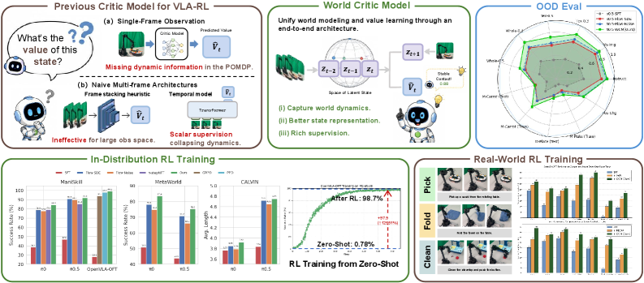
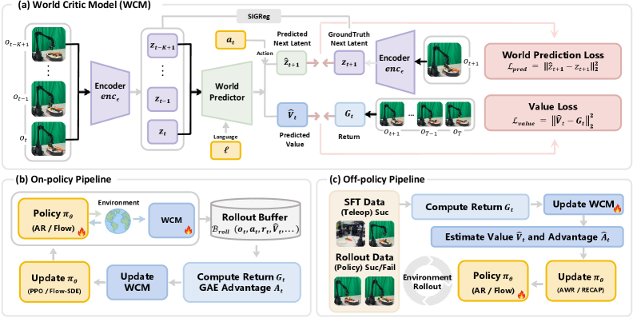

기존 VLA-RL의 critic은 단일 프레임에서 scalar return을 회귀하기 때문에 실제로는 POMDP인 로봇 제어의 partial observability를 놓친다. WCM은 lightweight LeJEPA 위에 value + 미래 latent 예측 이중 목표를 실어, critic 표현이 return이 아니라 환경 dynamics를 인코딩하도록 만든다. 149 태스크 4 벤치에서 SOTA — π₀ ManiSkill IND 84.4(+46.0), OOD 51.5(+33.4); π₀.₅ OOD 64.4. LIBERO-Plus π₀ 총합 39.1→72.8(+33.7). 실 WidowX-250S 7 태스크에서 π₀.₅+RECAP 대비 일관 우위.
1배경 · 문제의식
VLA-RL은 최근 급성장 중이지만, critic 쪽은 여전히 단일 프레임에서 return을 회귀하는 순진한 구조가 많다. 실 로봇 제어는 partial observability를 가진 POMDP이므로 (occlusion·측정 잡음·과거 컨텍스트) 단일 프레임 critic은 (a) 유사 관찰인데 실제 상태가 다른 경우를 구분 못하고, (b) 미래를 예측하지 못해 학습 신호가 sparse해진다.
저자들의 관점: critic이 단순 회귀기가 아니라 미래를 상상하며 value를 매기는 world model이어야 partial observability 하에서도 discriminative해진다.
2핵심 Contribution
Partial observability 원인 진단 — VLA-RL critic이 단일 프레임 scalar 회귀에 머무는 한 POMDP에서 값-추정 편향이 구조적으로 발생함을 그래프 POMDP 모델(그림 3)로 정리.
WCM: World Critic Model (LeJEPA + 이중 헤드) — 관찰 인코더 → causal transformer trunk → value decoder + world dynamics decoder 두 헤드. Sketched-Isotropic Gaussian Regularization(SIGReg)으로 feature collapse 방지. ℒ = ℒvalue + λ·ℒpred + η·ℒSIGReg.
온·오프 정책 · 다양한 백본과 통합 — PPO(autoregressive), Flow-SDE(flow-matching), AWR, RECAP까지 모두 지원. π₀·π₀.₅·OpenVLA-OFT 백본 위에서 IND·OOD·real-world 모두 SOTA.
3Method
Architecture
네 모듈로 구성: (1) 관찰 인코더(각 프레임 독립), (2) Language Adapter(CLIP 임베딩을 latent로 매핑), (3) Causal transformer history trunk(t−K+1..t 프레임 시퀀스를 언어와 함께 처리), (4) 두 개의 디코더 — value head와 world dynamics head.
Dual Objective (식 10)
ℒ = ℒvalue + λ · ℒpred + η · ℒSIGReg
· ℒvalue: L2 return 회귀 (기존 critic과 동일)
· ℒpred: 미래 latent 상태 예측 MSE (LeJEPA 스타일)
· ℒSIGReg: Sketched-Isotropic Gaussian Regularization — critic 표현이 붕괴해 상수 embedding으로 흘러가는 걸 막음
핵심 논리: 미래를 예측하도록 강제된 표현은 관찰 시퀀스에서 dynamics를 뽑아내야 하므로 자연스럽게 state-discriminative해지고, 그 위에서 value 회귀가 안정된다.
Integration with RL Trainers
On-policy: PPO(autoregressive VLA), Flow-SDE(flow-matching VLA) 모두에서 WCM을 critic으로 그대로 삽입.
Off-policy: AWR·RECAP과 결합 시 offline data에서도 partial observability에 강건한 advantage 추정.
4실험 결과
ManiSkill IND / OOD (표 1)
Backbone
방법
IND avg
Δ
OOD avg
Δ
π₀
SFT
38.4
—
18.1
—
π₀
+ Flow-SDE
78.8
+40.4
39.3
+21.2
π₀
+ WCM
84.4
+46.0
51.5
+33.4
π₀.₅
SFT
47.0
—
26.4
—
π₀.₅
+ Flow-SDE
90.9
+43.9
49.3
+22.9
π₀.₅
+ WCM
91.9
+44.9
64.4
+38.0
OpenVLA-OFT
SFT
28.1
—
18.3
—
OpenVLA-OFT
+ PPO
97.7
+69.6
77.1
+58.8
OpenVLA-OFT
+ WCM
99.0
+70.9
77.9
+59.6
3 백본 × IND/OOD 모두에서 WCM이 최고. 특히 OOD에서의 우위(π₀ +12.2%p, π₀.₅ +15.1%p vs 기존 critic)가 partial-observability 주장의 정량 근거.
LIBERO-Plus 강건성 (표 2, π₀ 발췌)
방법
Camera
Env
Init
Lang
Noise
Layout
Light
Total
π₀ SFT
32.3
59.4
1.5
42.3
48.7
50.2
48.0
39.1
π₀ + WCM
88.3
91.0
19.3
65.9
87.5
76.0
90.9
72.8
Δ
+56.0
+31.6
+17.8
+23.6
+38.8
+25.8
+42.9
+33.7
7 교란 차원 전부에서 이득. 특히 Camera(+56.0)과 Light(+42.9)처럼 관찰 자체가 변형되는 축에서 폭이 큼 — WCM의 dynamics-aware 표현이 유효.
실로봇 (WidowX-250S, 7 태스크, 표 3)
Backbone
방법
Carrot
Banana
Pepper
Cloth
Towel
Stovetop
Sushi
OpenVLA-OFT
SFT
24
11
19
15
16
1
9
OpenVLA-OFT
+AWR
29
23
24
29
35
10
17
OpenVLA-OFT
+WCM
32
26
26
38
40
15
22
π₀.₅
SFT
25
31
34
21
24
4
13
π₀.₅
+RECAP
33
37
40
32
33
27
18
π₀.₅
+WCM
44
38
43
38
35
33
24
/ 50 성공 (횟수). 실로봇 7 태스크 모두에서 기존 critic 대비 우위. Stovetop처럼 어려운 태스크에서도 15/50 → π₀.₅ 33/50.
5Ablation / 관찰
History length K 1→5 실험: K=1에서 기존 critic과 유사, K↑일수록 IND·OOD 모두 개선. 특히 OOD 이득이 큼 — 시간 컨텍스트가 partial observability 완화에 직접 기여.
λ 하이퍼(예측 loss 가중): [0.3, 0.5] 구간이 최적. 너무 크면 value 회귀가 밀림, 너무 작으면 dynamics 학습이 약해짐.
SIGReg 제거: critic 표현이 collapse해 value 헤드가 상수를 뱉기 시작 — dual-head의 흔한 실패 모드를 억제하는 핵심 항.
Value 곡선 시각화(그림 12·13)에서 성공/실패 궤적이 명확히 분리 — critic이 dynamics-aware하게 판별함을 정성 증거로 제시.
6핵심 Figure / Table

Figure 1 — WCM overview. 기존 critic이 partial observability에서 부정확한 반면 WCM은 dynamics를 함께 학습해 sim·real 양쪽에서 SOTA. (출처: arXiv:2607.29613)

Figure 2 — WCM architecture. 관찰 인코더 → causal transformer → value head + world dynamics head. on-policy(PPO·Flow-SDE)와 off-policy(AWR·RECAP) 파이프라인 모두에 삽입 가능. (출처: arXiv:2607.29613)